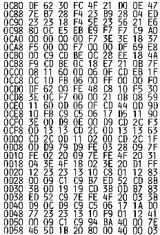
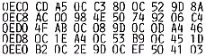
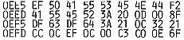

Nascom Journal |
Dezember 1981 · Ausgabe 11/12 |
Das nachfolgende Listing bezieht sich auf das Spiel „Life“, welches bereits im Nascom Journal veroeffentlicht wurde (Heft 1/80). Ich habe es zunaechst auf NAS-SYS umgeschrieben und weiterhin leicht modifiziert, d.h. anstelle von „SPACES“ beim Setzen der Zellen, muss man jetzt die Punkttaste druecken, sodass man jederzeit sehen kann, auf welchem Platz des Bildschirms man sich befindet. Nach der ersten Generation verschwinden dann alle Steuerbefehle und die Punkte.
|  |
0D60 Beginn des Zwischenfeldes |
|  |
Mit folgendem kleinen Zusatz kann die Pausendauer vor dem Setzen der Zellen eingegeben werden. Bei kurzer Dauer (z. B. 02) ist die fließende Veränderung der Strukturen besonders reizvoll. Start bei 0EE5 Red.
Einer der wesentlichen Unterschiede zwischen Nascom 1 und 2 ist das Kansas-City Interface, das letzterer zur externen Speicherung (Cassettenrecorder) verwendet. Dies bietet Vorteile einmal, weil es auch bei vielen anderen Rechnern vorhanden ist, und zum anderen, weil es neben höherer Datensicherheit auch eine Erhöhung der Geschwindigkeit erlaubt: Standart ist 300Bd, 1200Bd ist problemlos zu erreichen, 2400Bd soll auch zuverlässig gehen. Zur Definition des KC Codes sei hier nur kurz vermerkt, daß es ein serieller Code wie beim Nascom 1 ist, die Nullen und Einsen jedoch nicht durch Ton an/aus, sondern durch zwei Tonhöhen kodiert werden, und zwar High durch 2400 Hz (=8 Schwingungen bei 300Bd) und Low durch 1200 Hz, Erhöhung der Baudrate bis 1200Bd ist durch mehrfache Halbierung der Bitzelle möglich, oberhalb davon müssen die Frequenzen erhöht werden. Ich habe im wesentlichen das Nascom 2 Interface nachgebaut. Es weist im Gegensatz zu manch anderen Schaltungen 2 Vorteile auf: 1. Die Umschaltung der Frequenzen erfolgt synchron, d.h. im Nulldurchgang. Dadurch ist Vorteil 2 möglich: Durch Regeneration des Taktes mit einer PLL wird der Empfangstakt bei Geschwindigkeitsschwankungen des Bandes nachgeregelt, dadurch ist auch ein Cassettenaustausch zwischen Recordern mit Geschwindigkeitsabweichungen möglich! Allerdings habe ich diesen Vorteil bei mir bis jetzt noch garnicht ausgenutzt, auch so ist es bei 1200Bd (fast) völlig fehlerfrei.
Eine kurze Schaltungsbeschreibung: Zunächst einmal müssen die erforderlichen Baudraten bereitgestellt werden (74LS193 und 4024). Ich habe es gleich (im Gegensatz zum Nascom 2) so erweitert, daß von 300-9600Bd umgeschaltet werden kann. Das erleichtert den Anschluß an andere Rechner, Terminals usw. Das 74193 dividiert 2 Mhz durch 13 und erreicht damit haargenau 9600Bd, die weiteren werden durch den 4024 Teiler hergestellt. Der serielle Ausgang des UARTs (Tx
| Seite 41 von 55 |
|---|